output gif permanent green
output-gif-permanent-green.jpg

Branch: claude/branch-review-opz967
Implementation: e80a27bf · 2026-11-07
All accounts, artwork and video are disposable synthetic fixtures. Gray Program is actual source video; blue/green Composer and Scheduler previews are authoring illustrations. Browser GIF preview has an independent phase.
GIF limits: 10 MiB file, 256 frames, 60-second loop, 32 MiB decoded frames per image and 64 MiB per composition. Physical/desktop GIF output and a formal soak were not run.
The isolated HLS window has zero ERROR entries. An earlier pre-final clip-sync error under concurrent build/browser work is retained separately and is not classified as an environment limitation without a same-load baseline. See README.md and the JSON evidence.
Each following page preserves a full screenshot; all individual images are at most 1440 px wide.
animated-gif-program-phone-pt-BR.jpg
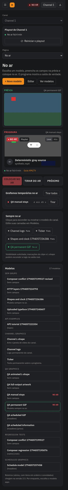
animated-gif-program-pt-BR.jpg
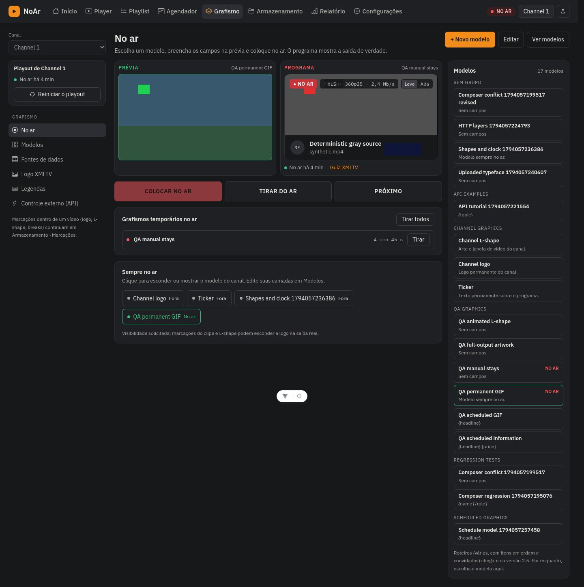
composer-animated-gif-phone-pt-BR.jpg
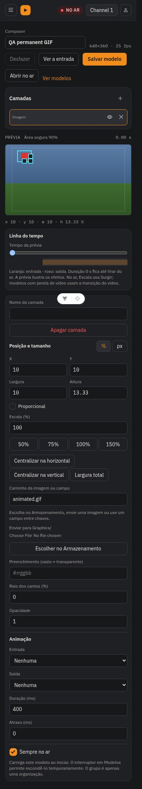
composer-animated-gif-pt-BR.jpg
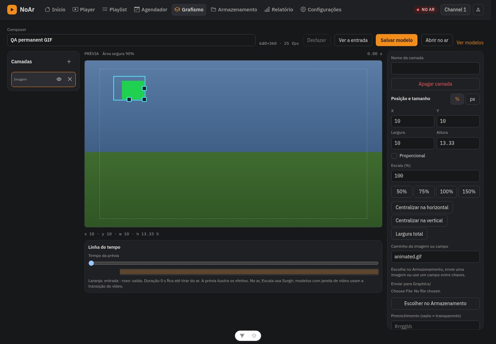
composer-animated-lshape-phone-pt-BR.jpg
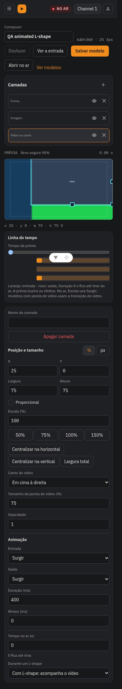
composer-animated-lshape-pt-BR.jpg
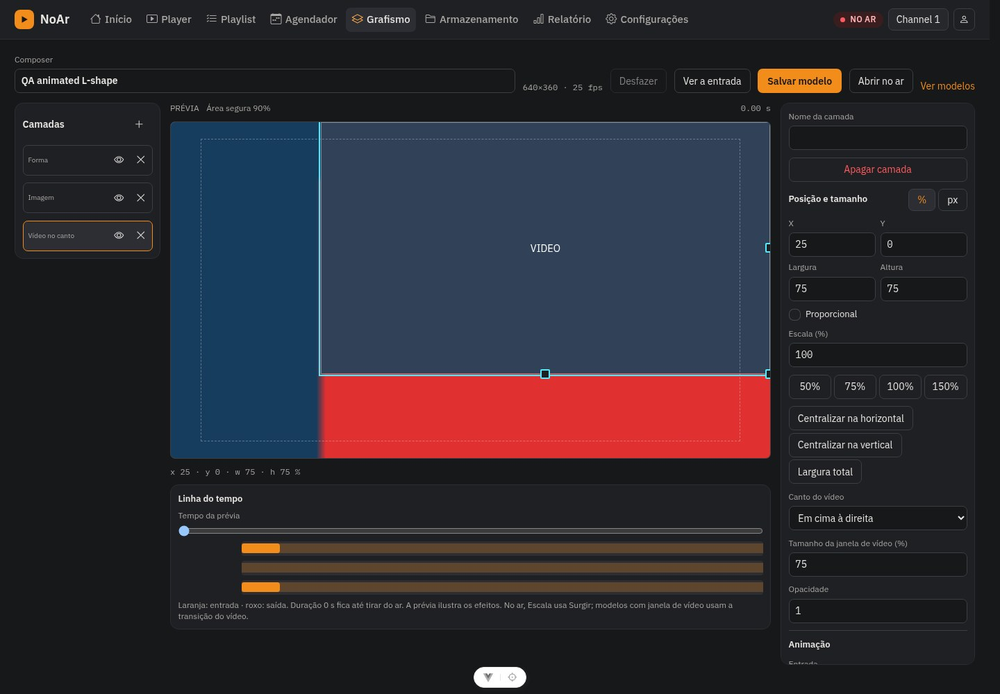
composer-natural-full-output-phone-pt-BR.jpg
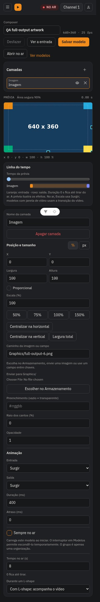
composer-natural-full-output-pt-BR.jpg
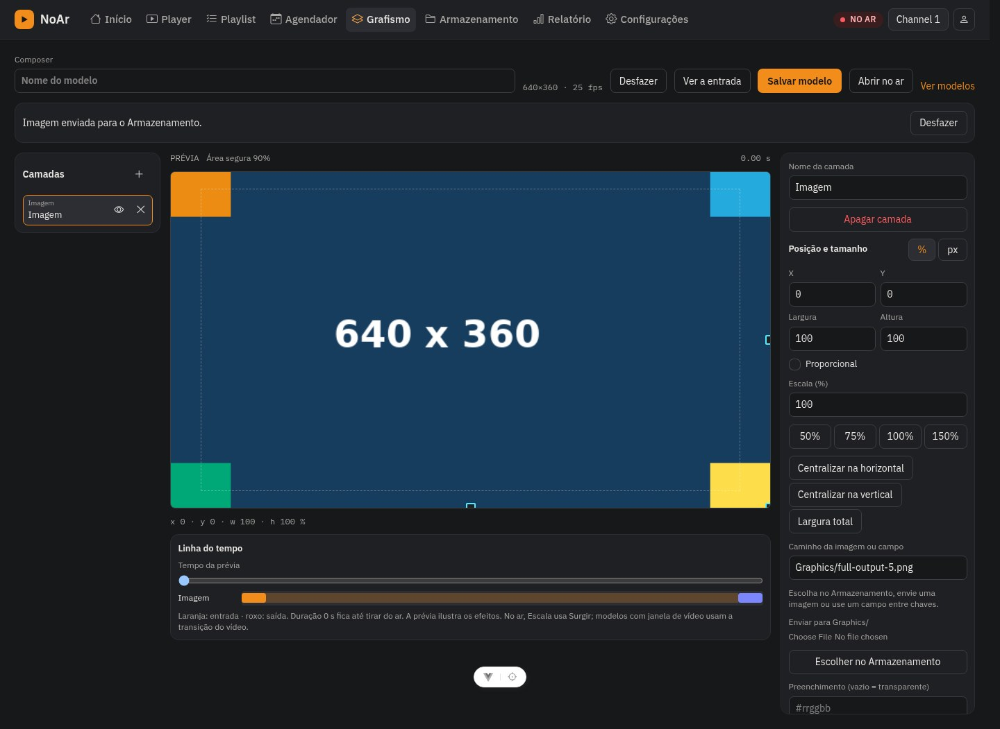
composer-natural-size-undo-pt-BR.jpg
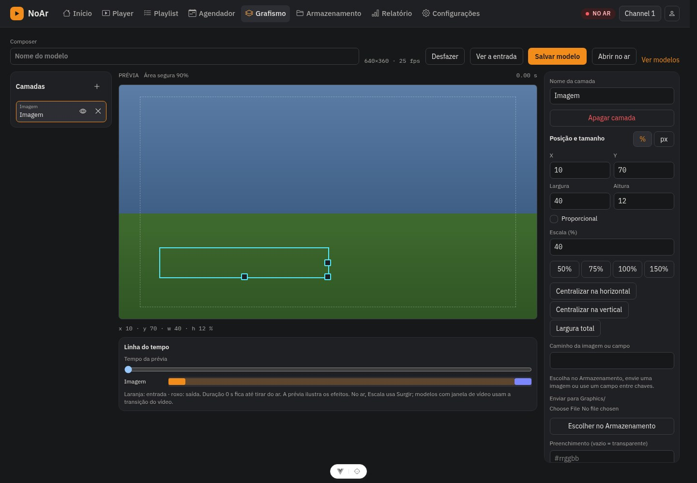
output-gif-permanent-green.jpg

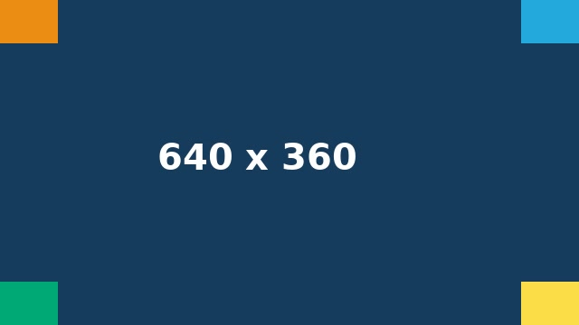
output-scheduled-animated-lshape-off.jpg

output-scheduled-animated-lshape-on-green.jpg

output-scheduled-animated-lshape-on-red.jpg
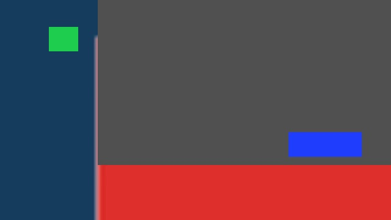
output-scheduled-animated-lshape-on.jpg


output-scheduled-gif-on-green.jpg

output-scheduled-gif-on-red.jpg

output-scheduled-logo-fade-out.jpg
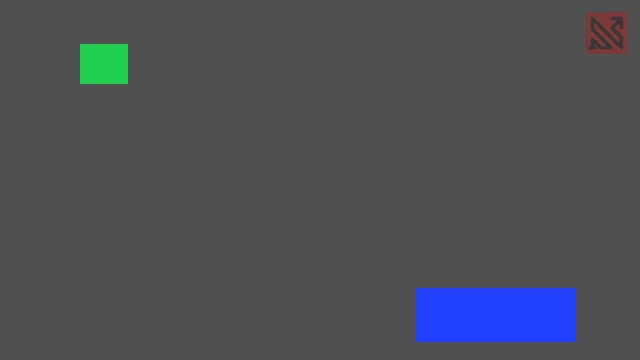
output-scheduled-logo-overlap-off.jpg
output-scheduled-logo-overlap-on.jpg
scheduler-template-fields-phone-pt-BR.jpg
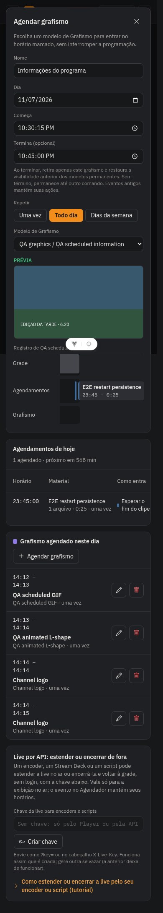
scheduler-template-fields-pt-BR.jpg
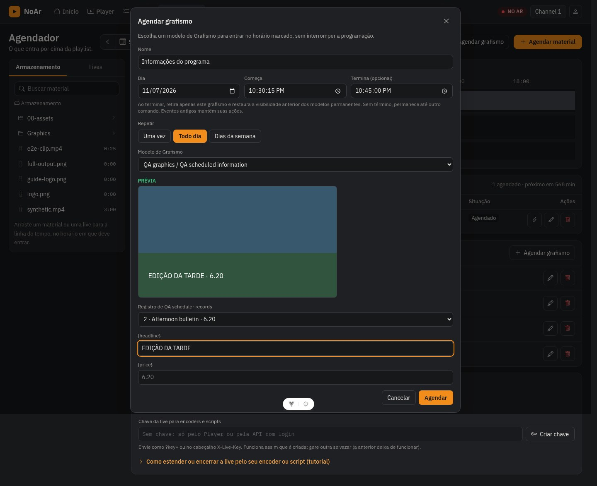
scheduler-template-list-phone-pt-BR.jpg
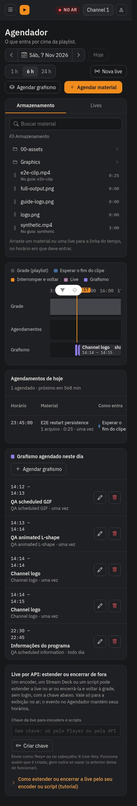
scheduler-template-list-pt-BR.jpg
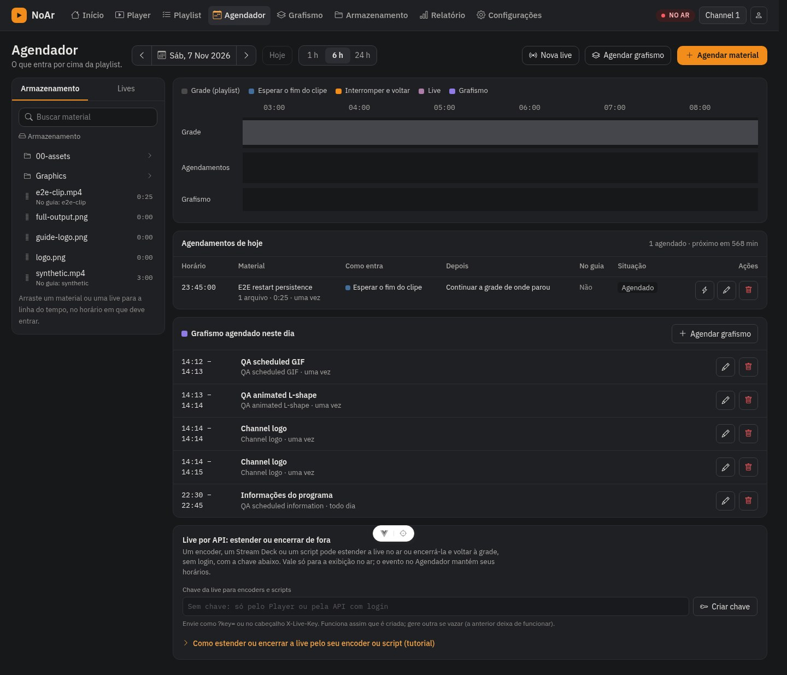
templates-delete-scheduled-phone-pt-BR.jpg
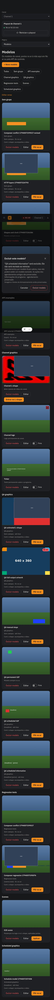
templates-delete-scheduled-pt-BR.jpg
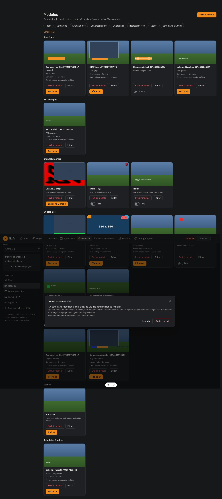
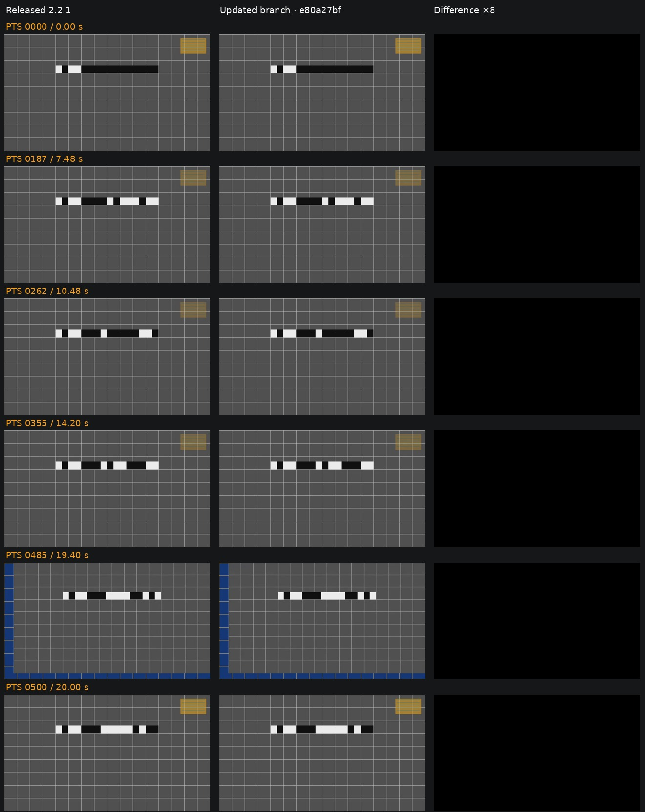